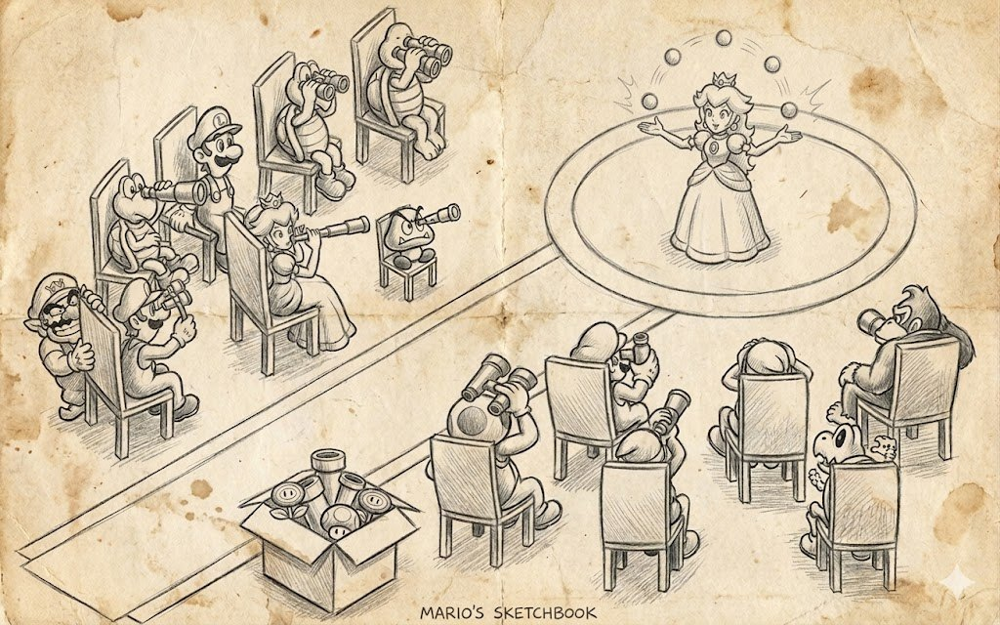
In the previous article I went through patterns and the need for trade-offs in real-world development, and there was one idea I deliberately left aside. Patterns rarely live alone, and any real system is not a single pattern but several of them, glued, twisted, stuck together, and in places nailed on from the side, each closing off only part of the problem. The resource manager is probably the most telling example of such a mashup, because from the outside it usually looks like a couple of lines such as LoadTexture("bark.dds"), while inside it's a cache, a defaults policy, failure-recovery mechanics, and another half a dozen things, each of which went through sweat, blood, and pixels and stayed in the architecture of this system.
If you open any book on game or game-engine development and try to find a definition of a "game resource", you get that a resource is a set of data that was loaded or created with specific parameters. Any qualifiers like "texture", "mesh", "sound", or "shader" are already redundant here, because what matters to us is not the nature of the data but the fact that it exists in a particular form.
The notion of "a particular form" still sounds abstract, though, which is why people prefer to say "texture", "mesh", "sound", and so on. But take one and the same texture wall.dds, which you can load in DXT5 with compression, sRGB, and a box mip filter, or without compression, in linear space, and with a different filter. Formally we had a single file on disk, but from the resource manager's point of view this is now two different "resources", because their parameters differ. Substituting one resource for another at runtime can break the game, because the game expects specific data for a shader — data that changed after a filter — or a specific mip layout that may turn out not to be there.
A more explicit example for shaders is when lighting.fx compiled with the define SIMPLE_BUMP_MAPPING and lighting.fx compiled with PARALLAX_BUMP_MAPPING physically look like a single file in the source, but produce two different pipelines, each with its own constant buffers and its own expectations about the texture set, and if the resource manager doesn't understand this, it will start handing out the second variant when the first is requested.
It's the same story with meshes: ship.mesh loaded in the resource manager and the same ship.mesh sitting in the GPU are two different objects whose lifetime and behavior on device loss even differ, to say nothing of the fact that the first one we can modify and the second we cannot.
A separate case is procedural resources, because they have no file on disk at all, and the role of the "source" is often played by a noise generator, and the manager has to store enough information to recreate exactly the same texture after a device loss or a quality-settings change, without substituting anything else for it — otherwise the player will see the smoke pattern change before their eyes or the floor tiling shift.
In No Man's Sky, where almost the entire visual is procedural, this is solved by making the planet's seed together with the set of generation parameters effectively the "address" of the textures and meshes, and two consoles that requested the same seed are obliged to get identical data, otherwise multiplayer breaks down completely.
Out of this comes a not-so-obvious but, for the rest of the story, important idea of resource identity, and it is stated as follows: two resources are considered one and the same if both their "source" and "parameters" match. All resource managers in modern engines rest on this, and when in Source 2 or in Unreal you stretch one and the same material over a thousand fences on a level, the engine does not create a thousand copies but returns one and the same handle.
From this definition, harmless and a little philosophical, almost everything else grows: the cache, the groups of defaults, the behavior on device lost, and the hot-reload mechanics on settings changes. It remains to acknowledge that a resource is a pair (source, parameters), and only that pair can be used as a key in a hash table and must be stored next to the resource itself in case it needs to be recreated.
What a resource manager does
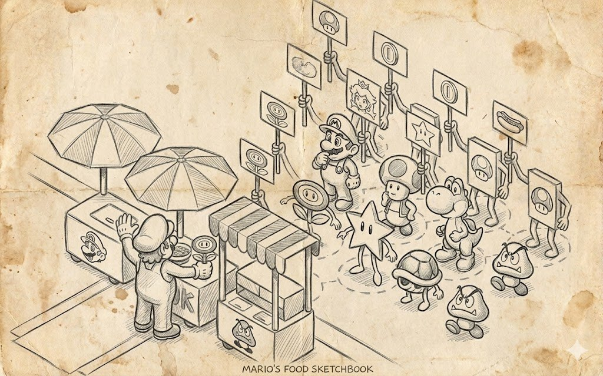
If we keep in mind that a resource is a "source plus parameters" pair, then in this picture of the world the resource manager turns out to be not just a table, and it makes sense to single it out as a separate engine subsystem so that the designers building a level don't have to think about DMA, or a lost device, or the fact that the mip-filtering parameters in one group differ from those in another.
The very first and outwardly simple responsibility of this subsystem is to create new resources on request. This is where a "design trap" usually appears, because "creation" is easily understood as only loading from a file, but in practice you have to not only read the data from disk but also unpack it and, if needed, place it in a suitable spot in memory, all while remembering exactly what you did with it, because without that data you won't survive a device lost or a quality-settings change and you'll have to load everything from scratch.
On PC it's a fairly rare occurrence under normal conditions and actually happens on a driver crash (TDR, Timeout Detection and Recovery), switching between GPUs on laptops (iGPU ↔ dGPU), a resolution or fullscreen/windowed change, or waking from sleep.
On consoles it practically never happens under normal operation, but it will on an HDR-settings change, an output-resolution change, and on PS4/PS5 when changing any option related to the graphics card.
On mobile it happens very often, and it's a platform where device lost is already a fact of life. An incoming call, switching apps, locking the screen, a low battery — all of this leads to a device lost 99.9999% of the time.
The most interesting part begins with procedural resources, because we have no source in the form of a file, and the role of the source is played either by an algorithm with explicit parameters like NoiseTextureGenerator(128, 128, seed=42), or by something more complex like the current level geometry, and the manager is obliged to remember it as the "source", be able to recreate the resource from it an hour into the game, and not confuse NoiseTextureGenerator(128, 128, seed=42) with NoiseTextureGenerator(128, 128, seed=43), because for the user these are two different noises even if they look almost indistinguishable.
In the already-mentioned No Man's Sky there are no "planet textures" in the game's archives at all — otherwise the game's size would balloon to a couple of terabytes — but there is an algorithm that reconstructs the same world every time from a seed and a set of biome parameters, and the engine there is forced to live in a world where textures don't exist in principle (for procedural objects), and the only truth about a resource is the chain of generators and their arguments.
Another interesting case is creating an "empty" resource for runtime data. This covers everything from render targets and the G-buffer to intermediate particle states or shadow projection. Here there is no source as such at all, and the manager is obliged to handle this case too, because in a real game such nameless resources end up being nearly more numerous than the ones loaded from disk, and each of them can be lost on a device reset just the same and must be recreated in the same format and the same size.
Out of this trio grows the understanding that the manager should essentially have a single entry point that can accept either a path, a generator, or an empty-buffer description, and for all three cases return a resource of the same nature, because the rest of the engine should not know where exactly the data came from and should work with the handle the same way regardless of its origin.
VertexBufferManager::create(4, VertexDeclaration().texcoord(0));
TextureManager::create(new NoiseTextureGenerator(128, 128));In the first case we create an empty buffer for four vertices and explicitly state what they look like, and in the second, instead of a path to a file, we slip in a noise generator, and the manager is obliged to keep that generator, because without it the same texture can't later be reconstructed.
From the outside both calls are just create, and the programmer doesn't have to keep three different APIs for three different cases in their head, which is exactly that "one line to load" for which we're willing to pay with an exponentially growing number of overloads.
Among game analogues this mix is best seen in Minecraft, where one and the same chunk mesh can have a "source on disk" in the form of a saved world region, a "source as an algorithm" on the first generation of a new area, and a "source as a player modification" when the chunk has already existed and got dug up, and the engine in all this is obliged to treat the chunk mesh as one and the same resource type, with its own lifetime and its own unloading rules.
Otherwise you'd have to build three parallel subsystems doing the same thing in three different ways. Block and item atlases there are created on exactly the same principle, and depending on which mods and texture packs are enabled, the resulting atlas is assembled at runtime as a procedural resource with a source of the form "such-and-such list of textures, such-and-such resolution, such-and-such filtering settings", and as long as that list hasn't changed, the engine has every right not to rebuild the atlas, because the parameters haven't changed and the resource's identity is preserved.
Caching
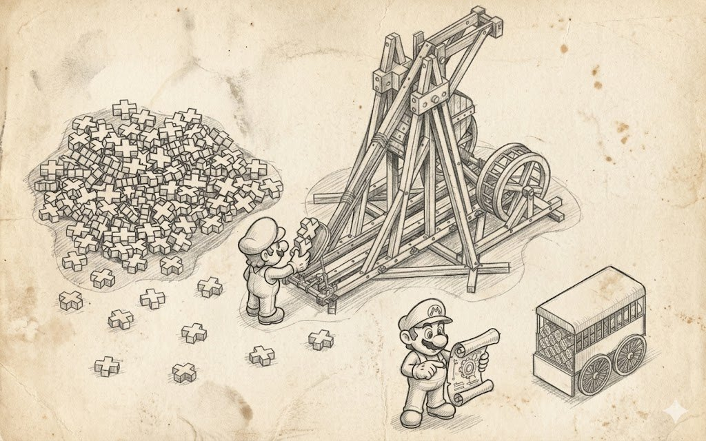
If the first point about creating resources answered the question of "how", the second answers the more painful question of "how many times", because in a real game one and the same resource is requested hundreds and thousands of times, and a naive implementation in which every request for a tree-bark texture goes to disk, unpacks the DDS, and puts it into a new block of VRAM will, in the very first forest scene, eat all the video memory and go OOM before showing a single frame.
Without a caching system the whole idea of a resource manager loses its meaning, and it turns out that caching is no less important a part of the resource system than the ability to actually load those resources. That is, the ability, in response to a repeated request with the same source and parameters, to return the very same object that already lives in memory, and to do so in such a way that the programmer doesn't even suspect it and keeps writing their LoadTexture("bark.dds") wherever they want.
Technically all this magic comes down to a rather boring scheme in which the manager has a hash table whose key is a pair of "source and parameters" and whose value is a weak reference to an already-created resource, and on each request the manager first tries to find that key, and only if it doesn't find it does it go and actually create the resource. And if it found it, it returns the existing handle. A weak reference is needed because if you store a strong reference in the cache, the resource will never be unloaded from memory, even when the last game object that used it died long ago.
The reference counting in this scheme also needs to be not simple but deferred-deletion, and as soon as the last owner is gone, the resource is sent to an LRU queue, from which it will later be evicted if the space is needed for something more relevant.
This LRU trick is especially important on consoles and mobile, where there's no virtual address space the size of a disk, and the manager has to understand that even a correctly reference-built cache will at some point outgrow the available video-memory budget, and at that moment a decision has to be made about whom to evict. And eviction also has to be done wisely, because two frames later the "hot" textures will be requested again, otherwise the cache turns into an anti-cache that does nothing but reload the same assets in a loop.
That's why in a normal implementation the hash table always comes with some aging mechanism or an outright explicit list of "this handle hasn't been used in a while", and Unreal Engine, in its texture-streaming system, keeps in memory only the textures the game's camera has reached in the last few seconds.
An implementation of such a cache allows it to be disabled. Global disabling is needed during development and during hot-reload of assets, when an artist re-exported a texture and wants the engine to take the fresh version from disk rather than return the one sitting in the cache from the previous run, and in this mode the whole cache is simply ignored, which of course kills performance but gives instant feedback on edits, which for iterative work matters more than any FPS.
But there are moments when we know that this particular load is definitely one-time and caching it is pointless, and here using the cache turns out to be, well, super-expensive. An example is loading screens: the texture there lives for a few seconds, and stuffing it into the cache would be far more expensive than just loading it directly, bypassing the cache.
Among game examples the most transparent and well-documented was and remains id Tech 3 and its descendants, where R_FindImageFile and S_FindSound are built on the scheme of "file name" plus "a few flags" like mipmap and allowPicmip, which form the key, and the lookup itself goes through a simple hash table, so tens of thousands of accesses to the same wall texture gothic_block/blocks17 over a match of Quake 3 in reality result in one load from disk and one VRAM allocation, and everything else is just returning an already-ready pointer.
That's why a level with a thousand identical torches on the walls runs at exactly the same speed as a level with a single torch, provided VRAM is enough for the resource itself at least once. Unity in the same role uses Resources.Load, which deduplicates by asset path and import settings, and in a more modern implementation the key becomes simply an address and a set of tags, but the idea is the same, and when in the editor you drag one and the same ScriptableObject into ten different places, at runtime it's still a single object, not ten copies, and changing one of its fields through the inspector means changing it everywhere at once.
Reload and recreation of a resource
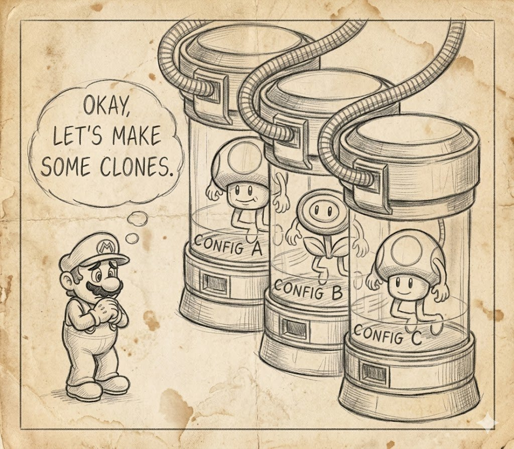
At the start of a project this looks like "unload and load again", picturing in your head a pair of Unload and Load functions called when you press the "apply" button in the settings menu. The problem with this simple scheme is that it works right up until there's at least one resource in the game for which an artist or game designer explicitly said "don't touch it, I need it exactly like this and no other way".
As soon as such a resource appears, which happens roughly within the first working day, naive Unload+Load starts overwriting manual settings, and the company logo on the bar wall, which the artist specifically loaded without a mip filter, after the very first reload gets all its mips and turns into mush, while the protagonist's facial normal maps, on which two weeks were spent, on a quality-settings change all cheerfully shrink by half, because that's the new default value.
That's why proper reload, by the second day, turns into changing the default parameters of one group of resources while simultaneously recreating those of them whose parameters actually changed. At the same time, reload is obliged to respect the split of parameters into explicit and implicit, that is, to change only those values that were taken from the group's defaults, and not to touch those that an artist or designer explicitly specified at the initial load.
From the API's point of view this means that the manager, besides the familiar Load and Create, gains a set of defaults and a set of reload methods of varying granularity, from "reload this one texture" to "reload everything except the UI", and these methods don't duplicate each other, because in a real game you need both, plus a couple of intermediate ones.
TextureManager::setDefaultMipFilter(Texture::mf_box_sharpen_soft);
TextureManager::reloadAllExceptGroup("ui");
TextureManager::setDefaultEffect(new ResizeBitmapEffect(vec2(0.5f, 0.5f)));The first line sets a new default mip filter, which by itself does nothing to the already-loaded textures and only changes the rule for all future loads and all future reloads.
In a wrong implementation, the default setter would immediately try to walk all the textures and recreate them, giving no chance to atomically change several parameters at once. The second line is what actually launches the mass reload of "ui".
The third line sets one more default, this time a halving effect, and formally, by the previous logic, it requires another reloadAll, but in a real implementation the setters are usually combined into a transaction and reload is called only once at the end, otherwise, when changing a dozen parameters, we'd get ten full passes over the entire resource set with ten disk accesses.
There are tons of game analogues for this mechanic, and the most obvious is the very act of changing graphics settings in the pause menu without exiting to the main menu and without a full level restart. In modern games this is already perceived as something so self-evident that players start getting indignant when they run into exceptions.
The Witcher 3, when switching quality settings, changes the mip bias and streaming parameters, and some assets are then rebuilt in the background, and the ones rebuilt are exactly those whose new parameters differ from the old.
The assets of dialogue faces or key story models, whose quality is hardcoded in the scene script, stay as they were, because otherwise in a cutscene Geralt's beard detail would suddenly drop, and the whole artistic intent of the scene would break because of an accidentally toggled checkbox in the menu.
Cyberpunk 2077 goes even further, and on a change of DLSS, FSR, or ray-tracing mode it doesn't just recreate some render targets and render chains, but also reroutes the internal draw queues onto the new resources, all without losing the save and without throwing the player onto a loading screen. Technically this is a very complex operation that internally is arranged exactly like loading the game from scratch — not only textures, but models, meshes, and render-pipeline resources.
Hot-reload
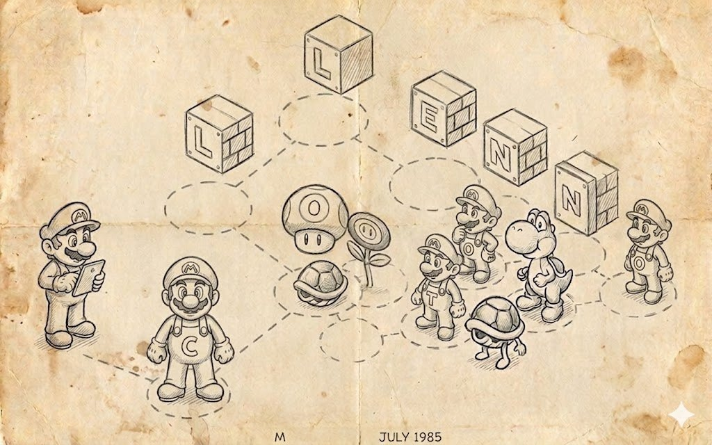
A separate field of rakes around reloading is hot reload during development. It's a mechanism where an artist edits a texture in their tool, then saves, and the engine notices that change through the file system and, without restarting the game, recreates exactly the texture whose file changed, leaving all the rest untouched.
In modern engines like Unreal or Unity, hot-reload comes down to a file-system trigger on the Content directory and a targeted ReloadAsset(path), and here a separate reload mechanism is needed, because a mass reloadAll would simply wreck the artist's workflow, forcing them to wait a minute after every Ctrl+S.
By itself this mechanism looks modest, but in practice the idea of "reload me by name" quickly turns into a lot of code that knows how to find a texture both in the main CTextureHandler table and in the separate CTextureResource cache, and not only by an exact name but also by a substring, by parameters, and by last-modified time, which in a large project with thousands of assets turns out to be far more important than a simple reload from disk.
On top of that, modern tools like Photoshop or GIMP like to hide small changes or change history in file streams, so you think you pressed Ctrl + S and flushed the changes to disk, but the engine simply doesn't see them, which is why you have to "do a little night sewing", i.e. reverse-engineer the formats the engine is supposed to support.
Another reason the engine doesn't see the changes is that Photoshop and GIMP write the file not directly, but through a temporary file with a subsequent rename, or hold the file locked while writing, and the file-system event arrives at the moment the file isn't fully written yet or the descriptor isn't closed yet. The engine opens the file and gets either an access error or incomplete data, which is solved by a small delay before reading or by retry logic.
class CTextureReloader : public CReloadDispatcher
{
private:
bool ReloadTextureByName( const CString& TextureName )
{
bool succeded = false;
CString textureNameLower = TextureName;
textureNameLower.ToLower();
CTextureHandler* pTextureHandler = CGraphics::Get()->GetTextureHandler();
HTexture tex = pTextureHandler->GetTexture( TextureName );
if ( tex )
{
pTextureHandler->ReloadTexture( pTextureHandler->GetTextureIndexMT( TextureName ) );
succeded = true;
}
else
{
CTextureHandler::Iterator End = pTextureHandler->IteratorEnd();
for ( CTextureHandler::Iterator It = pTextureHandler->IteratorBegin(); It != End; ++It )
{
const int nTextureIndex = ( *It ).second;
CString sName = pTextureHandler->GetTextureName( nTextureIndex );
sName.ToLower();
if ( sName.Find( textureNameLower ) != -1 )
{
pTextureHandler->ReloadTexture( nTextureIndex );
succeded = true;
}
}
}
CArray<CPtr<CTextureResource>> AllTextures;
GfxGetAllTextures( AllTextures );
for ( int i = 0, e = AllTextures.GetSize(); i < e; ++i )
{
CString sName( AllTextures[ i ]->_Filename );
sName.ToLower();
if ( sName.Find( textureNameLower ) != -1 )
{
const bool bReloaded = GfxReloadTexture( AllTextures[ i ].AccessPtr() );
succeded |= bReloaded;
}
}
return succeded;
}Here you can see the philosophy of reload: first we honestly try to find the texture by its exact name and reload only it, and only if there's no such name do we widen the search to a substring and walk all the textures in both subsystems, all without doing a mass reloadAll of everything in the world.
In this form the idea of reload has survived into modern code almost unchanged. The tooling around it has grown details, but the essence itself has stayed the same: reload is not unload-and-load, but a targeted swap of exactly those resources that really need to be swapped, without touching everything else and without losing along the way the parameters the user explicitly set.
Loss of the graphics device
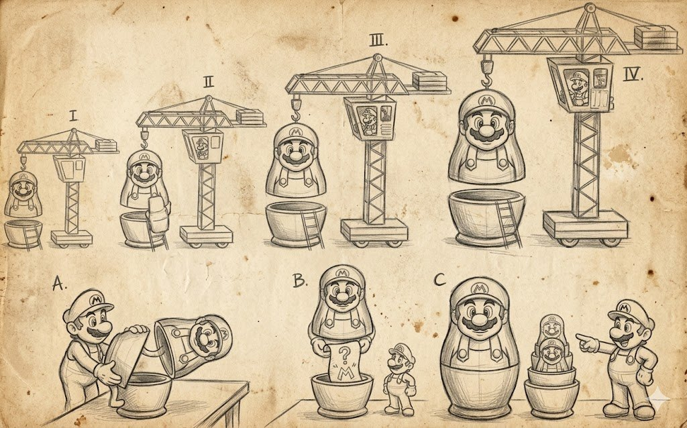
The thing most disliked by all graphics developers is what's called device loss. To understand where it even came from and why it deserves a separate point, you have to go back to the Direct3D 9 era and recall that with that model the graphics context started belonging not to the game but to the driver. The driver had every right to announce at any moment that we no longer have VRAM, render targets, or even the device itself, because the user pressed Alt+Tab, or because Windows went to sleep, or because the NVIDIA driver decided to recreate the DXGI object for its own internal needs, and at that moment all the loaded video memory turned into a pumpkin, while the game had to not crash, not show a black screen, and not lose progress, but restore everything that was there before the device lost.
To somehow coexist with this new reality, D3D9 introduced the notion of memory pools, and every resource at creation had to be assigned to one of three options, each with its own behavior profile on reset. Resources in D3DPOOL_DEFAULT lived directly in VRAM and were the fastest to work with, but on device loss lost all their contents and had to be recreated manually; resources in D3DPOOL_MANAGED were duplicated by the driver in system memory, thanks to which after reset the driver itself restored their contents, which was convenient, but for that you paid with double memory consumption and the inability to use them as render targets; and resources in D3DPOOL_DYNAMIC lived in a special area for frequently changing data and were created by the game each frame.
Out of this zoo of pools comes the necessity that the resource manager now has to store, for each resource, the peculiarity of its life inside the driver, because after a device loss it won't be possible to recreate the resource identically. Now, on receiving a device-loss signal, you have to free everything that was in VRAM, all without losing the wrapper objects themselves and the accumulated parameters, then on reset walk all your resources and recreate each one with the same source data and the same parameters it originally had, or restore them from the managed copy if there was one.
In modern Vulkan, DX12, and Metal there are no more pools, and the very notion of lost device has supposedly disappeared, but if you dig deeper, it turns out that the very same story lives under different names and with slightly more cryptic messages. In DXGI there's now the code DXGI_ERROR_DEVICE_REMOVED, which arrives on any Present or ExecuteCommandLists after the driver decides something is wrong with the device.
For example, after a TDR timeout error or after switching the adapter in a laptop between the integrated and the discrete GPU, and in response to this the game is obliged to throw out everything it had, recreate the device, swapchain, command queue, all resources, and pipeline state objects, and keep rendering as if nothing happened, and this is exactly what saves most PC games from 2015 onward from crashing out of nowhere.
In Vulkan the situation looks a bit milder, because the device there formally isn't lost and simply keeps working, but the swapchain has every right to return VK_ERROR_OUT_OF_DATE_KHR on a window-resolution change or a window-surface recreation, and in response to this you have to run the same invalidate-plus-recreate loop for everything, which conceptually is no different from the reset of the D3D9 era, only the problem is caught in one place rather than smeared across all the commands.
On the Nintendo Switch with its NX video subsystem this whole story rises to the level where any sleep of the console and any switch between handheld and docked mode effectively leads to a loss of the GPU context, and the engine is obliged to recreate all the same contents after resume, otherwise the player wakes from sleep into a black screen.
And if you now look at this whole mechanism we ended up with, it turns out the resource manager has turned into an Undo/Redo system. And just as Photoshop remembers every brushstroke, the resource manager now has to remember every created GPU object in enough detail to recreate it. The only difference is direction: Undo goes backward, while recovery after device lost goes forward through the same command history.
This is exactly why "just creating a resource" turns out to be such a bulky chunk of code, when "create" simultaneously means "write to the journal", and the more detailed the entry, the cheaper working with the resource turns out to be later.
Extensibility without rewriting the core
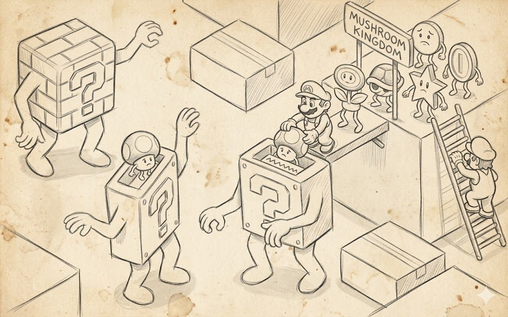
The least obvious side of the resource manager turns out to be not how a resource behaves during the game, but how the resource system will survive its own evolution over a horizon of one, three, and five years, when new data types, new file formats, new render subsystems, and new requirements from artists appear in the project.
None of these changes should turn into editing the manager's core, which sounds abstractly architectural, but in a bad implementation, adding a new asset type like "now we'll have voxel chunks" or "let's support neon signs for glowing inscriptions" forces you to climb into the file with the already-existing TextureManager, add a new enum, a new switch-case, and new fields there. After a dozen such edits, this file turns into a ten-thousand-line combine that nobody dares to touch, because any movement in it unexpectedly breaks something.
Ideally, managers of different resource types are different entities, and TextureManager knows nothing about shaders, while ShaderManager should know nothing about vertex buffers, and at the code level they have nothing in common except the idea. But that very idea — that we have a "source plus parameters" pair, that there's a cache by this key, that there's reference counting, and that there's the ability to recreate a resource after a device loss — repeats identically in all the managers.
That's why making each manager separately means either propagating the same bugs into different corners of the codebase, or fixing the same problem three times. So in a normal system, beneath all the managers lies a common templated base that's responsible for all this boring but mandatory mechanics, and leaves the specific manager only the specifics of working with its resource type. For example, exactly how to get an HTexture from a DDS file, or how to assemble a shader object from HLSL source.
Now "adding a new type" becomes "adding a new manager plus registration", because each type has its own manager and a common base lies beneath all of them, and a new asset type is just a new class inherited from the resource, and a new manager inherited from the templated cache, and nowhere in the existing files do you have to add a single switch statement.
As an example of how this scheme looks in a big commercial engine, it's convenient to look at Unreal Engine, where the base type is UObject, below it lives UAssetManager, which knows nothing about specific assets and only keeps track of their primary IDs and groups them by type.
The factories themselves live separately for each type, so for UTexture there's its own set of UTextureFactory-like classes, for UStaticMesh its own, for USoundWave its own, and adding a new asset type, some UProcMaterial or UNiagaraEmitterAsset, follows exactly the scenario of "a new class plus factory registration", without edits to the UAssetManager core.
In Godot it's the same logic, but there, instead of factories there are subclasses of Resource, and instead of a big hierarchy of managers there's a single ResourceLoader that knows how to find the right loader by file extension, and again, adding a new asset type comes down to writing a subclass and registering the corresponding ResourceFormatLoader, and ResourceLoader itself isn't touched in the process, because it works not with specific assets but with a loading interface, and it doesn't care what exactly is being loaded — a static mesh or a procedural texture.
The price of this extensibility, as is often the case, is almost invisible if you don't climb into the engine code. In the texture manager of my current project alone there are about 700 functions in total, of which about 200 are different variants of load, about 100 are reload, another 200 are create, and all this volume was generated from the data of a templated generator that was set up once for the list of texture parameters and then simply re-run whenever a parameter needed to be added or removed.
This figure, if you think about it, is the real price of letting the programmer write load(path, compression, effect) in a single line and not think about how exactly that line turns into the right load variant, and this is exactly where all the API-convenience savings we get in the engine's upper layer go.
class CResource : public CRefCountable<CResource>
{
public:
CResource()
: _pCache( NULL )
{
}
protected:
template <typename, typename, typename, typename, typename>
friend class CResourceCache;
virtual ~CResource() = default;
virtual void Delete() const { delete this; } // Give a chance for subclasses to handle their own delete
friend void RefCounted_AddRef( const CResource* pResource );
friend void RefCounted_Release( const CResource* pResource );
CResourceCacheBase* _pCache;
};This class has neither a data type, nor a file name, nor loading, nor parameters. This is a deliberate decision, and the whole point of it is that any specific resource type, from a texture to a mesh to a shader object, is built as a subclass of CResource that adds exactly the fields it needs, whereas the lifecycle mechanics are common to all.
All the complex code related to keyed caching, multithreaded protection, deletion handling, and handing out weak references is carried off into the templated CResourceCache, which is parameterized by three things: the resource type itself, the key type, and the mutex type for locking:
template <typename ItemType,
typename KeyType = CString,
typename LockType = CMutex,
typename TKeyHasher = SHash<KeyType>,
typename TKeyEquals = std::equal_to<KeyType>>
class CResourceCache : public CResourceCacheBaseFrom this template the specific caches are then derived for textures, for meshes, for shader programs, and for everything else in the engine that requires shared ownership and key-based deduplication, and each of them comes out essentially free for the architecture, in the sense that for it you don't have to add separate reference-management code, separate thread safety, or separate deletion handling — all of that is already implemented in the template and verified on a single instance of code that's then simply reused.
And when tomorrow the project wants to set up, say, a new asset type like a cache of scripted mission icons or a cache of dialogue sound clips, the developer won't have to rewrite GfxGetTexture, or the OnLostDevice walkers, or the reload mechanics, because they'll simply add a new subclass of CResource with their own fields and set up an instance of CResourceCache<MyNewResource, MyKeyType> for it, and the engine's entire resource infrastructure will automatically extend to the new type.
This ability to calmly add new asset types for years without editing the central files and without fear of breaking what's worked for a long time is the real extensibility test of any resource manager, because a pretty API at the start of a project can be drawn by anyone, but surviving ten years of commits from different teams with different levels of architectural understanding and not turning into a TextureManager.cpp of fifteen thousand lines with a hundred and seventy-five switch cases by asset type — only a system in which resource types are decoupled from each other from the start, and all the common mechanics are honestly carried off into one templated base, can do that.
Parameters and groups as keys
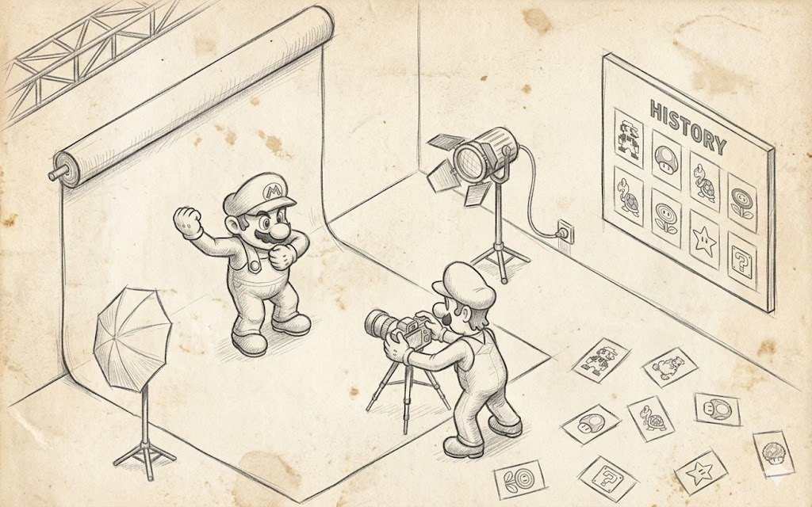
If the first half of the article was about what the manager is obliged to do on the outside, now we can talk about how it's arranged inside, and the central role in this arrangement is played by the parameters, because it's their choice that determines how comfortable it will be for the programmer to live with this system, how fast it will run, and how painlessly it will be possible to evolve it.
The first rule of a good resource manager, by today's data-driven standards, looks cruel. The set of parameters for each resource type should be fixed and set at the system's design stage, not chosen on the fly from arbitrary JSON or YAML, as modern engines like to do, where an asset's configuration often looks like an open dictionary (the Unity approach) into which you can put almost anything.
To understand why this is so, you have to look at the standard set of parameters for a texture, that is: the memory pool the texture will live in, the compression, which determines both the data format and the final VRAM size, the number of generated mip levels, the filter that generates those very mips, and finally a separate bitmap effect, in whose role anything can act.
Each of these fields is an explicit, concrete, pre-considered interface, and if you try to add some new field to this list, for example a background-highlight color or an artist's comment, it turns out they're not needed there, because they affect neither how the resource looks in memory nor how it renders.
This means they have no right to form the resource's identity and be part of the cache key, and from exactly this comes the first benefit of a fixed set: any parameter sitting in the load structure has to actually change something in the data or in its representation, and if it was added there "just in case", it's guaranteed to break either the cache, or the reload, or the recovery after device lost.
The second benefit of a fixed parameter set appears when the manager starts handing something out and accepting something from outside, and having a pre-fixed set you can describe it with a single struct, pass it by value, compare it byte by byte, hash it with a single function, serialize it, and so on.
An open map from string to variant, on the other hand, forces you on every access to build string keys, catch typos, check that the right type was put into the value, and carefully compare values taking into account that two equivalent maps may have a different key order.
Anyone who has even once debugged a bug in a Unity project where Resources.Load returned a cached copy of an asset because a new import option ended up not in the cache key but in some neighboring map understands very well how this ends in reality, and that adding color as a texture parameter is exactly about this class of bugs.
I'll repeat that any extension of the parameter list has to be a conscious design step, not a side effect of someone in the code needing an extra variable.
A no-less-important thing shows up only after the whole system is written, at the moment of reading it a year later or by colleagues, because a fixed parameter struct is effectively the interface's documentation, and a person who has opened the resource manager's header immediately sees that these eight fields are all there is to say about loading a texture.
They don't have to climb into ten other files to find out what other implicit keys in what other configs change the behavior, whereas in the "JSON on the fly" scheme this documentation physically doesn't exist, and the only way to find out the supported keys is either to find the place where they're parsed, or to open last year's project config and hope it has the full list assembled.
This becomes especially painful in big projects like Cyberpunk, where different teams have worked on the engine for many years, and any opportunity to "stick a key into json and notice it somewhere later" inevitably turns into hundreds of such keys scattered across the mod and the base game, and a resource's behavior starts depending on a murky combination of settings that formally aren't documented anywhere at all — welcome to a big project, as they say.
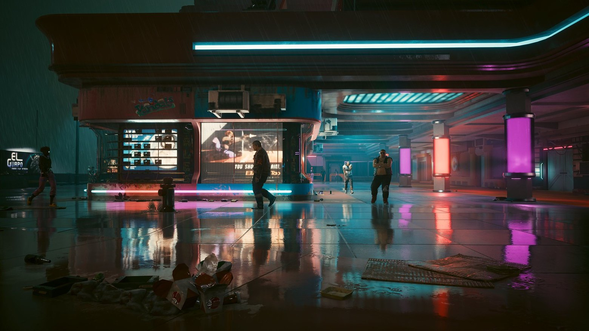
At the same time it's important not to confuse a fixed parameter set with the absence of a data-driven approach altogether, because the value of each parameter itself may well be set from a config, from an asset's import settings, or even from command-line arguments, and there's no contradiction here with the fixed-parameter-set rule, because the point is not about the source of the values but about the set of struct fields into which those values are placed.
That is, an artist can write mipFilter: Mitchell and compression: BC7 in a texture's meta file, and that's absolutely fine, but the fact that the texture has exactly these two fields and exactly these values is watched over by a C++ struct declared at the engine's design stage, and any attempt to put, say, coolnessLevel: maximum into this meta file should result in an error at the import stage rather than being ignored, because otherwise over time these coolnessLevels start multiplying in number and cluttering the data with meaning that only the owner of that texture understands.
struct STextureOptions
{
STextureOptions();
COptional<SColorSubstitution> _ColorSubstitution;
uint _nMipSkipCount = 0U;
bool _bReportMissingTexture = true;
bool _bForcePOW2 = false;
bool _bIssRGB = false;
bool _bSaveAlpha = false;
bool _bUseMinMipSkip = true;
};And this simple-looking struct, settled into the engine header somewhere around line nine-thousand-something, is the practical embodiment of the rule "a fixed parameter set per type", because it can be copied, compared, hashed, sent into the cache as part of the key, serialized to disk, parsed back, and you always know what's inside it, regardless of who added new properties to a neighboring asset's json and when.
It's exactly from this predictability that the whole rest of the construction grows, from group defaults to targeted reload, because you can change and override only that whose set is known up front.
Changing settings without a full restart
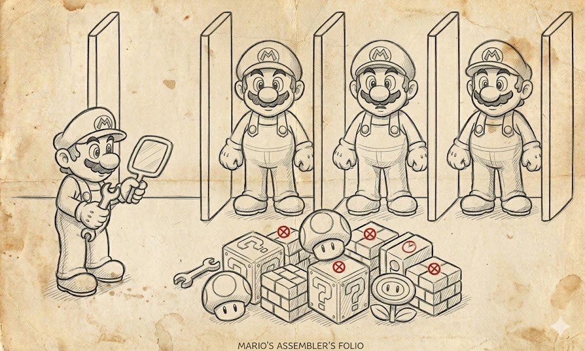
By now, I hope, a complete picture of the resource manager's arrangement has formed in your head: that resources are data with a fixed parameter set, from groups with their own defaults, and from explicit-implicit values with a flag on each parameter.
Let's get back to what this whole mechanic was started for, because the main justification for all these architectural efforts is precisely changing graphics settings right during the game. Yes, all of this turned out to be needed to provide the conditional simplicity of 5 minutes spent in a menu.
To understand the difference between a good implementation and a bad one, it'll be convenient to first describe the bad path, which many engines arrive at naturally, and then go through the good one, which requires more work up front but then pays off every time the player climbs into the menu to change something.
Cheap and fast
The simplest and most intuitive implementation of changing graphics settings looks like this: we write the new values into the config, then honestly kill the entire loaded scene with all its textures, meshes, shaders, and render targets, and then load the world again, now with the new global parameter values.
Formally everything is correct here, because the new world comes out completely new, no old resources with the old settings are left anywhere, and the engine's state after the settings change is exactly the same as if we had started the game with these parameters from the very beginning.
Because of this simplicity and formal correctness, the approach lives in many engines, and mobile games especially eagerly take this path, because their scene start fits into three to five seconds, and the player tolerates such a pause without much objection, all the more so since the settings menu on mobile is opened once every six months.
The problems begin when it comes to big games with a long level start, and here you can point a finger at almost every game up to the end of the 2010s, where changing graphics settings effectively meant the engine unloads the whole map and then loads it again, and with large levels this took from three to five minutes of real time.
A player who went into the menu just to experiment with the checkboxes would discover that enabling one takes four minutes, looking at the result half a minute, realizing the effect is so-so, and turning it back off another four minutes, and in the end every touch of the graphics settings turned into a quest of its own, which many gave up on after the first two attempts.
Such an approach isn't suitable for serious games, because the player touches the graphics settings not once in the game's whole life, but at least several times on the first launch, then on an update's release, then on a patch's release, then on buying DLC, and every such touch shouldn't cost them five minutes of real time.
Long and expensive
The alternative approach, used in modern engines, is built on the idea that we don't kill the world but use the reload mechanism to change only what really needs changing. What the new settings don't affect stays untouched.
The idea is indecently simple and comes down to three steps that repeat every time the player changes something in the menu. The first step, performed back at the design stage, is to split all assets into groups tied to graphics settings, and to do it so that no single setting change requires reloading part of a group, but only the whole group at once.
That is, if there's a separate "shadow quality" option in the menu, then there should be its own shadows group for it, into which shadow maps, shadow-cascade render targets, downsampled copies, and other shadow-specific resources fall, and when this option is changed we'll reload exactly that group, without touching the UI or the ordinary world textures.
The second step is the runtime reaction to changes, and it calls the default setter for the corresponding group with the new value, and right after it calls reloadGroup of the same group. After which the manager walks all the group's resources and recreates those of them whose current value of this parameter was implicit, that is, taken from the default, and doesn't touch those where it was set explicitly at load.
In code it looks roughly like this
TextureManager::instance().setDefaultShadowResolution(1024)
TextureManager::instance().reloadGroup("shadows")And the whole process of changing the shadow setting takes exactly as long as is needed to rebuild the shadow resources themselves, without exiting the map and without re-reading tens of megabytes of world textures that have nothing to do with shadow quality at all.
And this, in essence, is that very "reload feature" for which the whole song and dance with explicit and implicit parameters was started, because without separately storing this pair together with each resource, on any change of a group's default we'd wipe all the artistic edits and fine tuning of specific assets.
A side effect of the resulting construction is that on game start we can do nothing to restore the previous session's settings, but simply read the config file with the user's settings, set the defaults of all groups with those very same setters, and after that start loading content. Then all resources on their very first load get the right parameter values, having inherited nothing extra from the defaults the programmer baked into the code, because for them the group's default will already be what the user chose.
Modern big games, in their most successful incarnations, work exactly by this scheme. A good example here is Overwatch, which manages, on a change of effects or shadow quality, not to restart the match, not to exit to the lobby, and not even to make a noticeable pause, and the player can pick a comfortable preset losing nothing of their state, and switching a preset is a default change plus a targeted reload of the assets that depend on that preset.
Red Dead Redemption 2 goes in the same direction, and switching presets happens without exiting to the main menu and without a full world restart, and under favorable conditions the player sees only a brief flicker, after which the world keeps spinning with the new settings already.
In all these cases, behind the outward magic stands exactly the same three-step scheme, just wrapped in more complex streaming engines. You don't have to kill the world to change one of its knobs.
What modern engines have
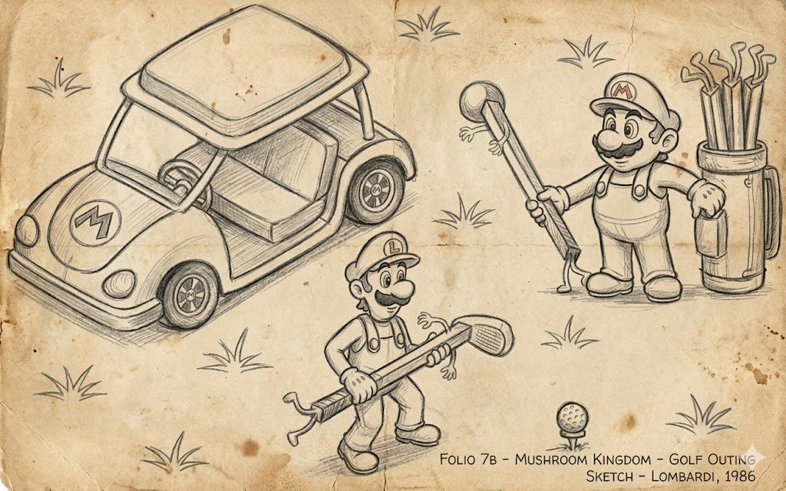
The resource manager has a quite standard architectural embodiment, recognizable both in commercial engines and in small open-source projects. The idea of resource identity by the source-and-parameters pair is most often implemented at the technology level through the classic Flyweight pattern plus a cache, in which the cache itself is the guarantee that two requests with identical keys will get one and the same instance.
This scheme is easy to see in Unity, where Resources.Load is arranged on this principle, in Unreal with its shared UObjects, and in Source with its materials and textures. The cache as an entity is almost always an ordinary hash table plus reference counting, and it's already hard to find a AAA engine where it's done any other way, because this combination has been verified for years and has no alternatives, except that in some exotic cases weak references or LRU are added on top.
The split of parameters into explicit and implicit is, perhaps, the worst documented of all, because this mechanic simply isn't exposed in the public API and lives somewhere under the hood, but the idea is easy to recognize by the per-asset override system, where for a single texture you can say "this parameter of mine is overridden, don't touch it on a group-settings change", and effectively this is that very explicit flag, just wrapped in an editor checkbox.
Targeted reload of a group is technically implemented via streaming, and it's clearly visible in Witcher 3, in Cyberpunk, or in Unreal Engine, where a quality change rebuilds the render targets without throwing the player into the main menu.
Codegen of the API for a large number of parameter combinations most often looks like an external Python or Perl script that emits C++ headers; in Unreal a similar role is played by the Unreal Header Tool, which generates a lot of helper code around asset reflection and serialization.
Finally, the split of managers by type is technologically almost always type-specific singletons or type-specific subsystems; in Unreal Engine these are subsystems, spread across the engine, editor, game, and local-player levels.
What changed over 20 years
In place of D3DPOOL_MANAGED and D3DPOOL_DEFAULT, which in the 2000s defined the entire VRAM strategy, today things are formalized down to the level of DXGI_MEMORY_SEGMENT_GROUP, and although the names have changed, the developer still has to think about what they have in fast video memory, what's in slow system memory, and who kills whom when space runs short.
The old notion of lost device also didn't survive as a name, but turned into device removed for DX12, into a swapchain change for Vulkan, and into context loss on Android and Switch, and each of these names describes its own narrow case, but the recovery process itself stayed the same: throw out everything, recreate the device and the context, and re-birth the resources from the saved descriptions.
Mip filters formally survived, but in modern production they ended up pushed into the background by a whole floor of more advanced techniques like GPU-driven rendering, streamable mips, and virtual texturing, where the idea that "a texture has a fixed number of mips, and they're generated by such-and-such filter" no longer covers a reality in which a texture exists across a multitude of parts and levels of detail loaded on demand.
Shader #defines today live in the form of shader variants and a permutation cache in a bunch of engines, and the number of combinations is now counted not in dozens but in thousands and tens of thousands, which in turn spawned a separate infrastructure for their precompilation and caching between runs.
But despite all these changes in terms and in physical hardware, the basic construction of the resource manager remains practically untouched, and if you strip the specific technology names out of it, everything stays relevant twenty years later too.
A resource is still defined as data plus load parameters, the cache is still built by a key from this pair, defaults still make sense to group and override not globally but by group, reload is still more profitable in the form of a targeted reload than in the form of "kill everything", and the load description still must be stored next to the resource for the sake of recovery.
These basic concepts turned out to be arranged so fundamentally that they survived a change of GPU API, a change of console generations, the appearance of the SSD as a new level of memory, and the transition from desktop to mobile GPUs, and they keep working exactly the same way they were at the start of the 2000s.
TL;DR
If you try to express all the text above in a single paragraph, it would sound roughly like this. The resource manager is not yet another Singleton pattern applied to textures, but a worked-out architecture of the asset lifecycle, in which there's the notion of resource identity, a cache, and group policies of defaults, and two kinds of reload different in nature — the emergency one for a lost device and the user one for a settings change — and a programmer-friendly API into which this multi-level mechanism is neatly wrapped. Good architecture differs from this year's fashionable patterns precisely in that its formulations outlive both the APIs on which it was first described, and the console generations in which it was first proven, and the teams that wrote it, and keep bringing value where nobody even remembers the names of the people who came up with it anymore.
P.S. Everything written above describes resource managers up to roughly 2022 fairly accurately; I know that period from personal production experience. Beyond that begins territory where I have more reading than practice, and three topics deserve a separate conversation: bindless rendering, Nanite, and PSO cache. If you work with a modern stack, these topics are worth studying from fresher materials.
P.P.S. The cover and section images are taken from the wonderful site https://refactoring.guru/ with their permission and tweaked a little with a file.
← All articles